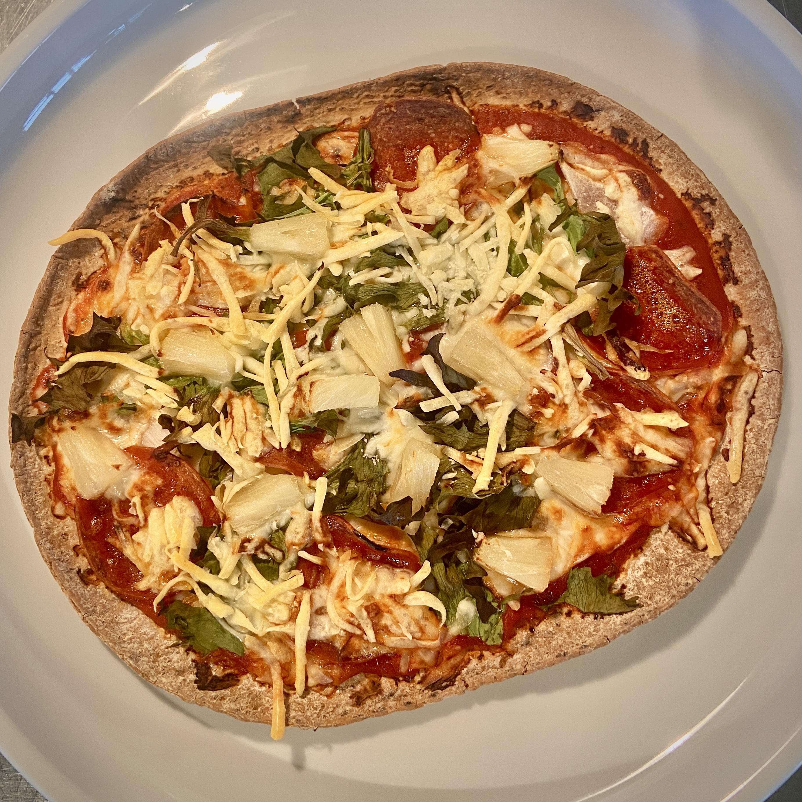

Turkey Pepperoni Pizza

Description
My girlfriend and I have been trying to find foods that have the lowest colories with the highest volume.
What does mean exactly? Well, it means having the best of both worlds, the most amount of food for the lowest amount of calories. Sounds like
it's too good to be true, right? Well, guess what? It isn't! All it takes is a few adjustments to your ingredients and even you can still eat
your favourite foods without sacrificing flavor and cravings! Let's jump right into the recipe!
Macros
- Carbs 47.5g
- Fat 8.2g
- Protein 37.9g
Ingredients
- 1 FlatOut Light Italian Herb
- 1/4 cup Great Value Pizza Sauce
- 1 tsp Trader Joe's Minced Garlic
- 1/8 cup Diced Onion
- 1/2 cup Great Value Shredded Mozzarella Cheese
- 8 slices of Hormel's Turkey Pepperoni
- A small handful of Arugula
- Optional: Slices of pineapple
Steps
- Preheat the oven to 350 degrees.
- Grab 1 Light Italian Herb flat bread and spread 1/4 cup of Great Value Pizza Sauce and 1 tsp of Trader Joe's Minced Garlic on the the surface.
- Dice up 1/8 cup of onions and spread that over the pizza sauce.
- Top the onions with 1/4 cup of Great Value Shredded Mozzarella Cheese.
- Place 8 slices of Hormel's Turkey Pepperoni on top of the cheese.
- Finish by adding a small handful of arugula, a few slices of pineapple (if you're into that), and adding the last 1/4 cup of cheese to the top.
- Bake the pizza for about 10 minutes or until desired crispiness.
- Lastly, and most importantly, enjoy the heck outta your delicious, healthy, low calorie pizza!